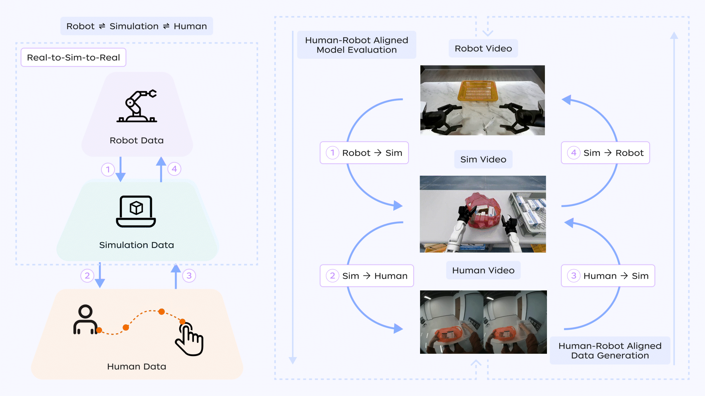
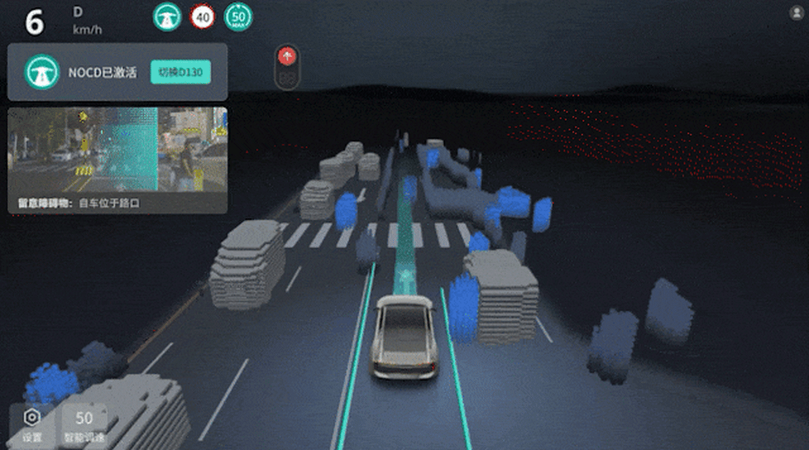
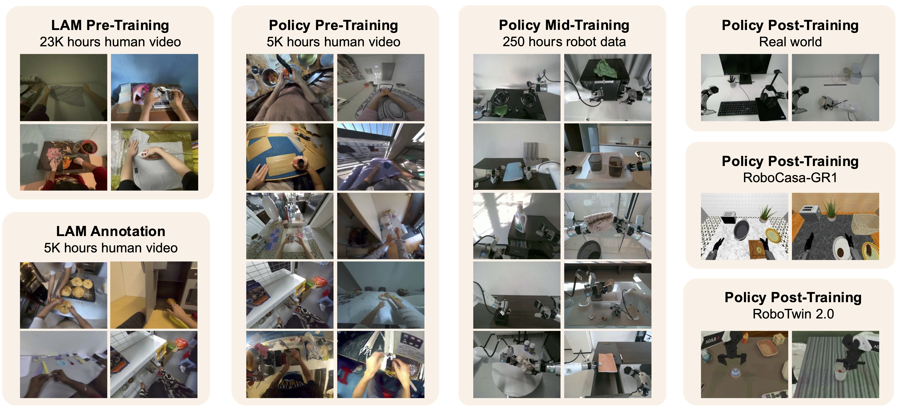
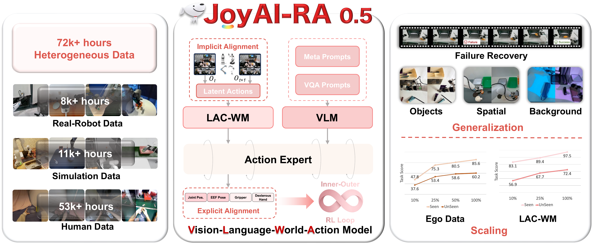
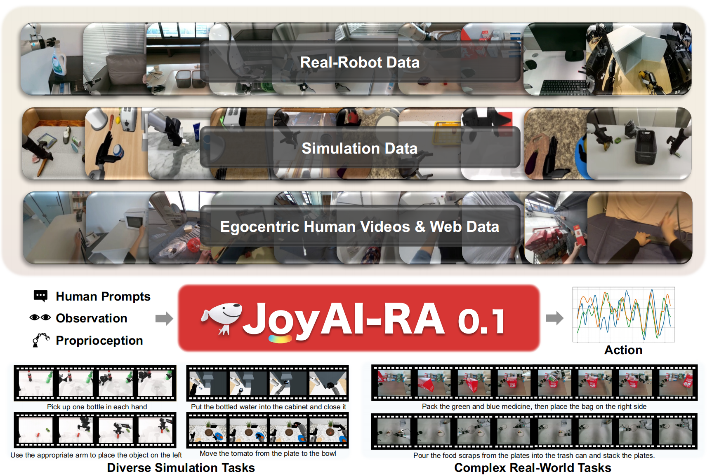
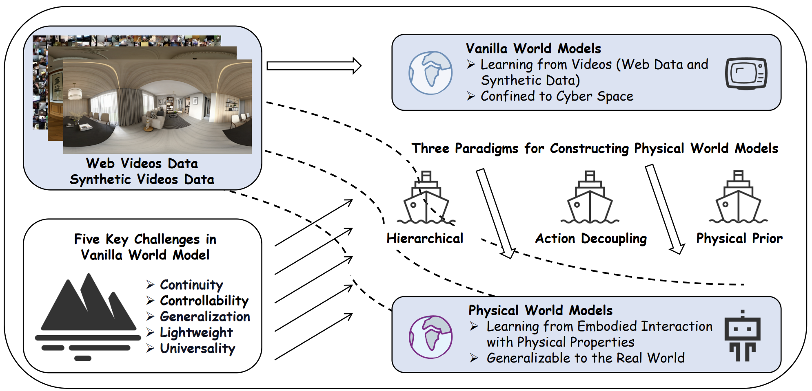
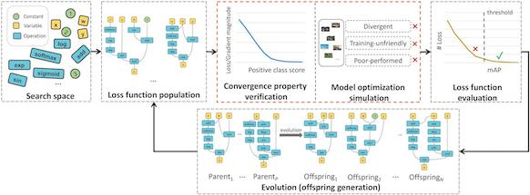
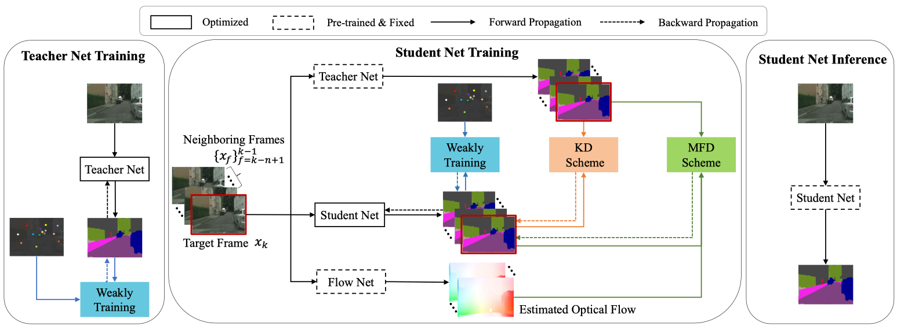

Tsinghua University
Department of Computer Science and Technology
M.S. in Computer Science · Outstanding Graduate
Hi! I am Peidong Liu, a senior embodied AI researcher at JD Explore Academy. My research focuses on pre-training for embodied intelligence, with an emphasis on learning generalizable action representations and policies from large-scale heterogeneous data, including human demonstrations, simulation data, and data collected through embodiment-agnostic interfaces such as UMI. I aim to transfer these capabilities to downstream robotic applications and use real-world robot data to continually refine models, establishing a closed-loop learning framework that integrates pre-training, deployment, and iterative improvement. If you are interested in an internship opportunity, please email me.
Previously, I led the VLA Team at DJI Automotive (now Zhuoyu Technology), focusing on fine-tuning VLA models to handle long-tail driving scenarios. I received my M.S. in Computer Science from Tsinghua University in 2022 as an Outstanding Graduate, and my B.S. from Sun Yat-sen University in 2019, graduating summa cum laude. I have also interned at SenseTime and WeChat.
Department of Computer Science and Technology
M.S. in Computer Science · Outstanding Graduate
School of Computer Science and Engineering
B.S. in Software Engineering · Summa Cum Laude
Senior Embodied Model Researcher
Pre-training an embodied foundation model, with emphasis on VLA and World Action Model.
VLA Technical Lead
Led end-to-end VLA research for autonomous driving and deployed billion-parameter multimodal models on NVIDIA DRIVE Thor.
Robotic autonomy foundation model · JoyAI-RA 0.1 · Project page
Vision-Language-World-Action model · JoyAI-RA 0.5 · Project page

A simulation-driven embodied data transformation toolchain for model evaluation and ego2robot data synthesis.
Project page

Construction-scene understanding · Deployment story
* denotes equal contribution; ✉️ denotes corresponding author. My name is shown in bold.








Talk excerpt · Official replay